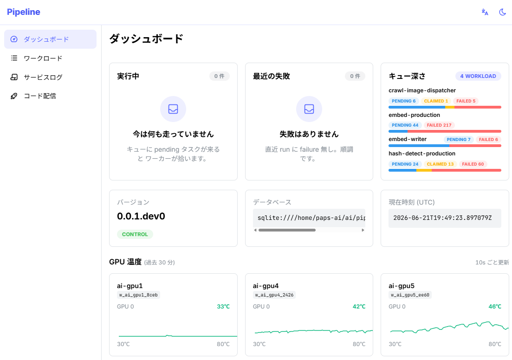
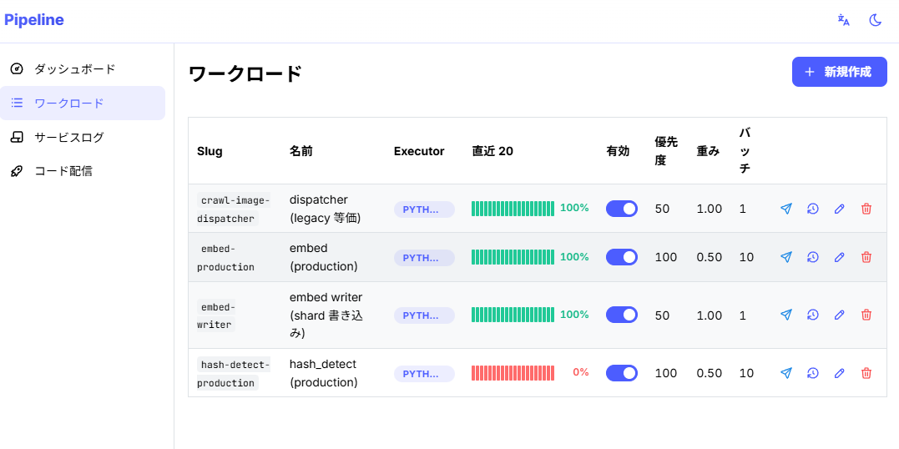
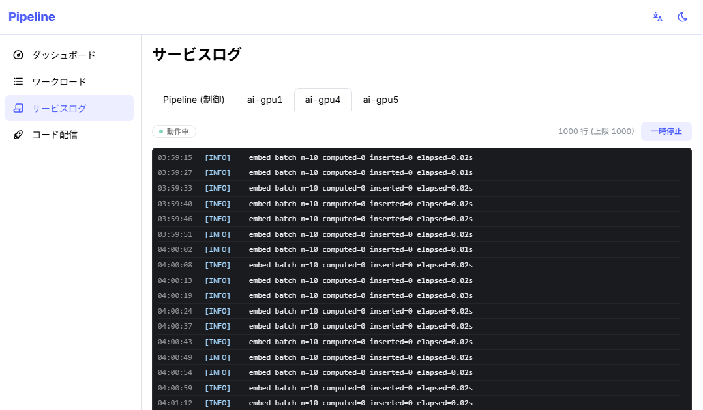
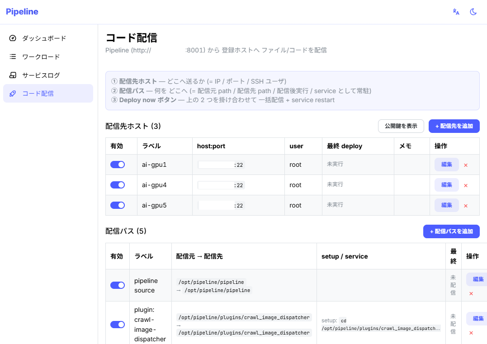

なぜGPUの空きを埋め切れるのか
単一ジョブで動かすGPUは、入力待ち / モデルロード / preprocess / 後処理で 案外40-60%アイドルしています。Pipelineは「同居させる土台」+「賢く配分する構造」の 2 段で、その隙間を別workloadに流し込みます。
MIG非対応GPUでも1枚に同居できる
サーバーGPU (A100 / H100) ならMIGで1枚を最大7枚に切り分けられますが、 RTX 4090 / 5090 / A6000 / 3090 / L4 はすべてMIG非対応です。 そこをMPS (NVIDIA Multi-Process Service) で物理共存させ、1 GPU上で複数CUDAプロセスを並行実行します。 nvidia-cuda-mps-control -d 1行で動きます。 PipelineはMPSの上のオーケストレータ層 (= どのworkloadをどれだけ流すか) を担います。
self-loopでキューを絶やさない
ワークロード自身が「次のtick」を自分でキューに入れ続ける設計です。外部のdispatcher / cronは不要で、キューが空になる瞬間が無いので、ワーカーは常に次の仕事を受け取れます。
1タスク = 1 claim、順序自由
ワーカーはキューから1件取って処理 → 完了 → 次の1件、を繰り返すだけです。バッチbarrier (= N件揃ってから次へ) が無いので、速いtaskと遅いtaskが同居しても速い方が先に流れて、GPUを空かせません。
複数workloadの同居 + 重み配分
同じワーカーfleetにN個workloadを登録できます。優先度 + 重みをOptimizerが自動調整し、「メインの推論70%、隙間の解析30%」のような同居構成を1 fleetで実現します。重い学習が来たら軽い推論を一時退避させ、終わり次第復帰します。
GPUタグで必要なワーカーへ
ワーカーごとに gpu / cpu / 任意タグを付けられます。GPU必須のtaskはGPUワーカーへ、CPUでOKなtaskはCPUワーカーへとアフィニティで振り分けられるので、GPUは「GPUが本当に要るタスク」だけで埋まります。
主な特徴
GUIでワークロード登録
シェルコマンドやPythonモジュールをWeb UIのフォームから登録できます。開発者以外の運用担当の方でも追加・編集していただけます。
プラグイン方式
ローカル plugins/ ディレクトリに plugin.yaml + main.py を置けば即フォーム化されます。サンプルも同梱しています。
シンプルなワーカー
各ホストに1つのデーモンがHTTP heartbeatで参加します。クラスタマネージャ不要、SSH不要です (= 配信はHTTP経由)。
ライブ可視化
ダッシュボードで実行中タスク / 最近の失敗 / キュー深さ / GPU温度を3秒更新で表示します。
失敗詳細 + 再実行
各runのstderr / Python tracebackをワンクリックで展開できます。失敗したtaskは同じpkで即再投入が可能です。1件詰まって全体停止、というAirflow系の落とし穴を構造的に回避しています。
SQLiteシングルファイル
制御プレーンの全状態が1つのSQLiteファイルに収まります。バックアップ・差分・grepが容易です。
アーキテクチャ
制御プレーン (= FastAPI + SQLite + React配信) とワーカー (= ジョブ実行プロセス) は 明確に分離されています。ワーカーはHTTP heartbeatで制御プレーンに参加し、キューから タスクをclaim → process → completeします。
画面ツアー
主要4画面のスクリーンショットです。クリックで原寸表示できます。




これでできること
| シナリオ | 仕組み |
|---|---|
| 定期的に1行 = 1タスクのSQLクエリを並列実行したい | ワークロード1つ + ワーカーN台 → 自動分散 |
| GPUを使うモデル推論を複数ホストで回したい | Pythonプラグイン + ワーカーtags=gpuでアフィニティ |
| 失敗したタスクだけを後で再実行したい | RunsDrawerの各行に「再投入」ボタン |
| 運用担当 (= 非エンジニア) がジョブ設定を変更したい | plugin.yaml の init_kwargs からフォームを自動生成 |
| 新しいGPU箱を5分で追加したい | bootstrapスクリプト1行 + Deployタブで配信先登録 |
これは向いていない
- 10,000ノード以上の分散学習 — 専用フレームワーク (Rayなど) の方が適切です。
- ノード間で大tensorをzero-copyで渡すワークロード — object storeを持たないためです。
- 複雑なDAG / Workflowオーケストレーション — 直列chain + self-loopのシンプル設計に振り切っています。
- マルチテナント (複数チーム共有) — 単一operatorの運用を想定しています。
ライセンス
MIT License です。詳細は LICENSE をご参照ください。